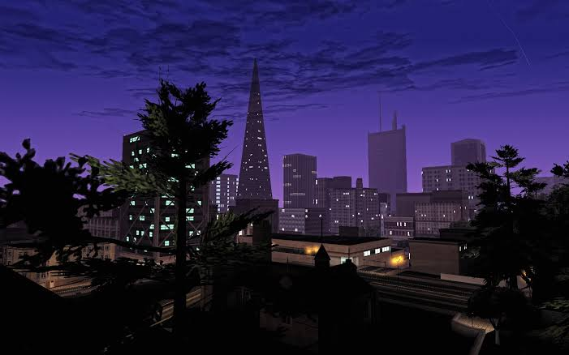

La Ciudad
El estado ficticio de San Andreas fue diseñado como una parodia y homenaje a la costa suroeste de los Estados Unidos a principios de la década de 1990. Su estructura geopolítica se divide en 3 ciudades metropolitanas principales y 5 condados rurales o desérticos.
La región incluye ciudades como Los Santos, inspirada directamente en Los Ángeles, California; San Fierro, basada en San Francisco con su peculiar relieve empinado; y Las Venturas, inspirada en Las Vegas, Nevada, cuyo motor económico absoluto es el juego de apuestas y el turismo masivo.

Los Santos Sede

San Fierro

Las Venturas
Lugares y Entornos
- La región del campo, conocida como The Badlands, se ubica al sur y oeste del mapa, rodeando el monte más alto del juego: el Mount Chiliad.
- En esta zona rural predominan los bosques densos, llanuras agrícolas y pueblos clave como Palomino Creek y Angel Pine.
- La región del desierto, situada en la mitad norte del estado, se caracteriza por sus cañones rocosos y formaciones de piedra caliza.
- En el desierto se encuentran instalaciones de alta seguridad, como el Área 69 y la monumental central hidroeléctrica Presa Sherman.